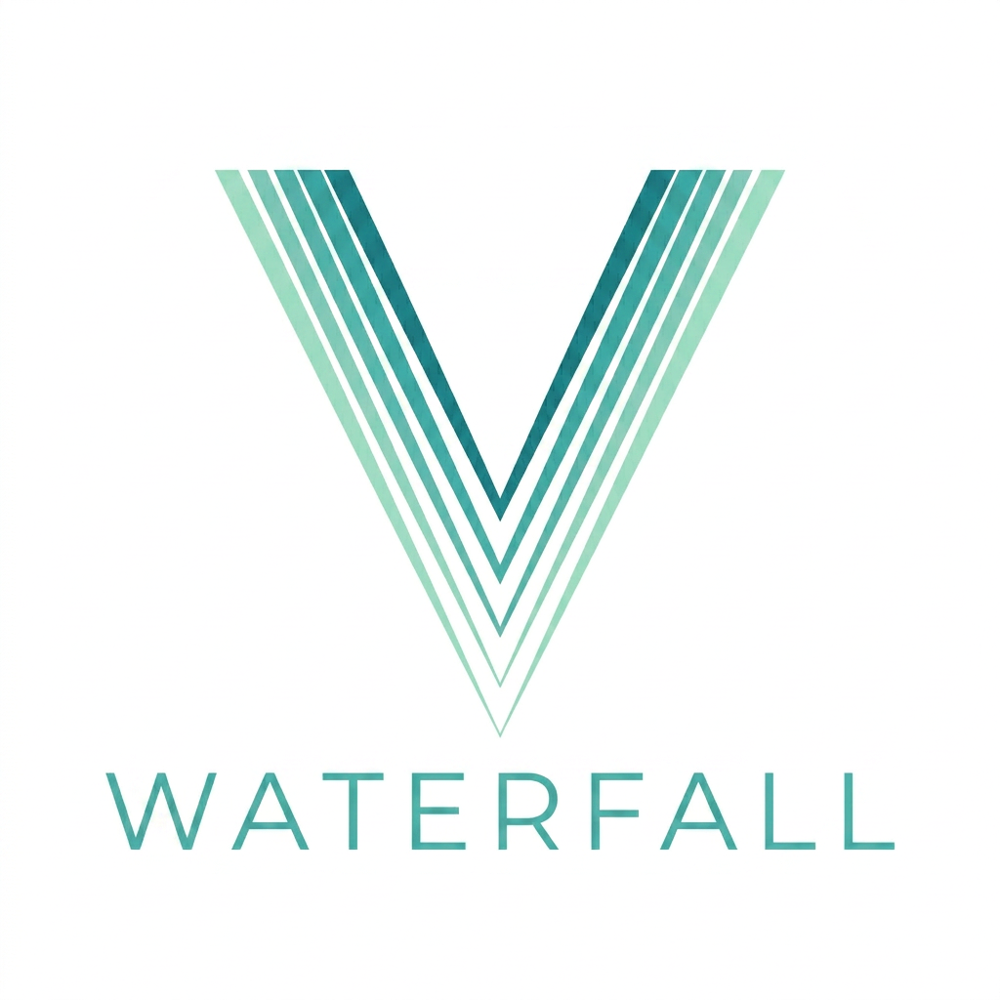
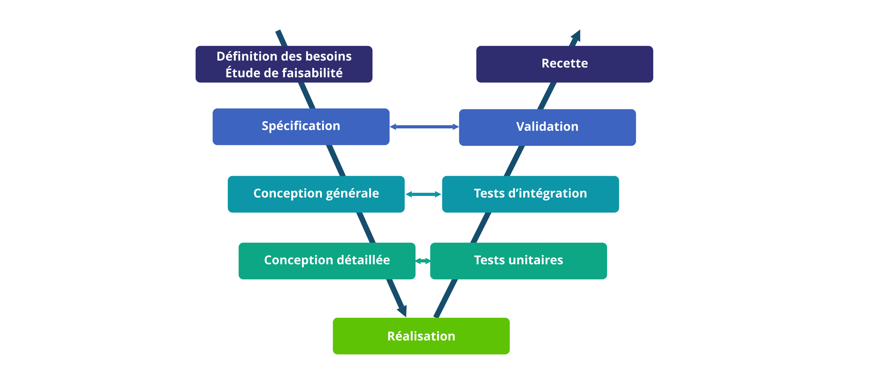
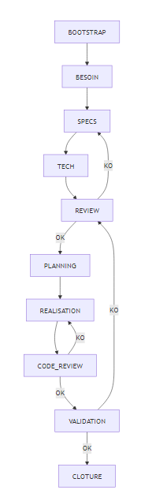
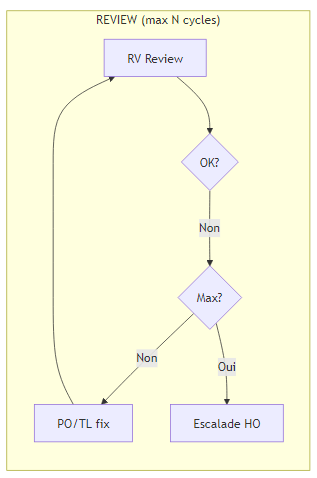
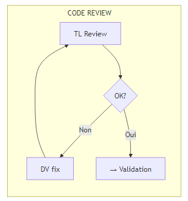
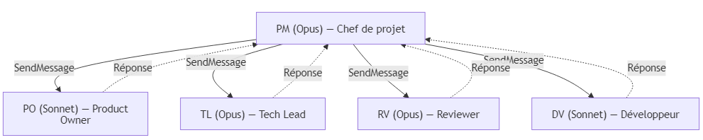
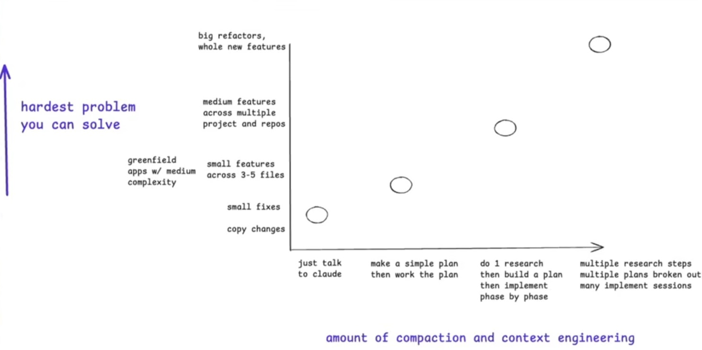

Structured AI development.
Phase by phase.
No more Slop!
Waterfall is a multi-agent SDD framework for Claude Code. It orchestrates a team of 8 specialized AI agents through a strict waterfall cycle — from requirements to deployment — driven by a deterministic state machine.
Install// Why Waterfall
No more Slop.
Stop shipping hallucinated architecture.
Most AI-assisted development is unstructured. The model improvises. The developer course-corrects. The result is inconsistent, hard to review, and impossible to reproduce.
Waterfall enforces a strict phase gate between every step. No agent produces output until the previous phase has been reviewed and approved. The pipeline is deterministic. The output is auditable.
Once the pipeline is running, the orchestrator drives every phase autonomously — checkpoints validate silently, decisions are logged. You come back to a finished deliverable.
// The Problem
When AI gets it wrong early, everything downstream fails.
Unstructured AI-assisted development produces a cascade of errors. The model improvises a decision in phase one, and every subsequent phase inherits that mistake — compounding silently until validation reveals a broken foundation.
Waterfall interrupts the cascade. Each phase is gated by a deterministic checkpoint. No agent moves forward until the previous output has been reviewed and approved — by another agent, and ultimately by you.
// Methodology
10 deterministic phases. Zero improvisation.

// The Team
8 specialized agents. One deterministic pipeline.
Each agent owns a single phase. None of them improvise.
// Screenshots
Waterfall in action.




// Trade-offs
Waterfall has a cost. Here’s what you’re signing up for.
- Longer process — each phase is gated. You don’t skip review.
- Token consumption — 8 agents × full context = real cost. Budget accordingly.
- Built for scope — overkill for a one-liner fix. Use it on projects that warrant the structure.
For the right problem size, the overhead pays for itself in fewer rework cycles.

// Install
Get started in 60 seconds.
# Claude Code must be installed
# https://claude.ai/downloadgit clone https://github.com/<YOUR-USERNAME>/waterfall.git ~/projects/waterfall# In Claude Code settings → Plugins → Add local plugin
# Path: ~/projects/waterfall